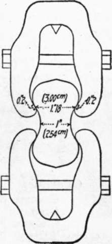

Report Of Committee On Uniform Tests Of Cement. Part 4
Description
This section is from the book "Cement And Concrete", by Louis Carlton Sabin. Also available from Amazon: Cement and Concrete.
Report Of Committee On Uniform Tests Of Cement. Part 4
58. Method
The material is weighed and placed on the mixing table, and a crater formed in the center, into which the proper percentage of clean water is poured; the material on the outer edge is turned into the crater by the aid of a trowel. As soon as the water has been absorbed, which should not require more than one minute, the operation is completed by vigorously kneading with the hands for an additional 1 1/2 minutes, the process being similar to that used in kneading dough. A sand-glass affords a convenient guide for the time of kneading. During the operation of mixing the hands should be protected by gloves, preferably of rubber.
Moulding
59. Having worked the paste or mortar to the proper consistency, it is at once placed in the moulds by hand.
60. The Committee has been unable to secure satisfactory results with the present moulding machines; the operation of machine moulding is very slow, and the present types permit of moulding but one briquette at a time, and are not practicable with the pastes or mortars herein recommended.
61. Method
The moulds should be filled at once, the material pressed in firmly with the fingers and smoothed off with a trowel without ramming; the material should be heaped up on the upper surface of the mould, and, in smoothing off, the trowel should be drawn over the mould in such a manner as to exert a moderate pressure on the excess material. The mould should be turned over and the operation repeated.
62. A check upon the uniformity of the mixing and moulding is afforded by weighing the briquettes just prior to immersion, or upon removal from the moist closet. Briquettes which vary in weight more than 3 per cent from the average should not be tested.
Storage Of The Test Pieces
63. During the first 24 hours after moulding the test pieces should be kept in moist air to prevent them from drying out.
64. A moist closet or chamber is so easily devised that the use.of the damp cloth should be abandoned if possible. Covering the test pieces with a damp cloth is objectionable, as commonly used, because the cloth may dry out unequally, and, in consequence, the test pieces are not all maintained under the same condition. Where a moist closet is not available, a cloth may be used and kept uniformly wet by immersing the ends in water. It should be kept from direct contact with the test pieces by means of a wire screen or some similar arrangement.
65. A moist closet consists of a soapstone or slate box, or a metal-lined wooden box — the metal lining being covered with felt and this felt kept wet. The bottom of the box is so constructed as to hold water, and the sides are provided with cleats for holding glass shelves on which to place the briquettes. Care should be taken to keep the air in the closet uniformly moist.
66. After 24 hours in moist air the test pieces for longer periods of time should be immersed in water maintained as near 21° Cent. (70° Fahr.) as practicable; they may be stored in tanks or pans, which should be of non-corrodible material.
Tensile Strength
67. The tests may be made on any standard machine. A solid metal clip, as shown in Fig. 5, is recommended. This clip is to be used without cushioning at the points of contact with the test specimen. The bearing at each point of contact should be 1/4 in. wide, and the distance between the center of contact on the same clip should be 1 1/4 ins.
68. Test pieces should be broken as soon as they are removed from the water. Care should be observed in centering the briquettes in the testing machine, as cross-strains, produced by improper centering, tend to lower the breaking strength. The load should not be applied too suddenly, as it may produce vibration, the shock from which often breaks the briquette before the ultimate strength is reached. Care must be taken that the clips and the sides of the briquette be clean and free from grains of sand or dirt, which would prevent a good bearing. The load should be applied at the rate of 600 lbs. per minute. The average of the briquettes of each sample tested should be taken as the test, excluding any results which are manifestly faulty.
Fig. 5.
Constancy Of Volume
69. Significance
The object is to develop those qualities which tend to destroy the strength and durability of a cement. As it is highly essential to determine such qualities at once, tests of this character are for the most part made in a very short time, and are known, therefore, as accelerated tests. Failure is revealed by cracking, checking, swelling, or disintegration, or all of these phenomena. A cement which remains perfectly sound is said to be of constant volume.
70. Methods
Tests for constancy of volume are divided into two classes: (1) normal tests, or those made in either air or water maintained at about 21° Cent. (70° Fahr.), and (2) accelerated tests, or those made in air, steam, or water at a temperature of 45° Cent. (115° Fahr.) and upward. The test pieces should be allowed to remain 24 hours in moist air before immersion in water or steam, or preservation in air.
71. For these tests, pats, about 7 1/2 cm. (2.95 ins.) in diameter, 1 1/4 cm. (0.49 in.) thick at the center, and tapering to a thin edge, should be made, upon a clean glass plate [about 10 cm. (3.94 ins.) square], from cement paste of normal consistency.
72. Normal Test
A pat is immersed in water maintained as near 21° Cent. (70° Fahr.) as possible for 28 days, and observed at intervals. A similar pat is maintained in air at ordinary temperature and observed at intervals.
73. Accelerated Test
A pat is exposed in any convenient way in an atmosphere of steam, above boiling water, in a loosely closed vessel, for 3 hours.
74. To pass these tests satisfactorily, the pats should remain firm and hard, and show no signs of cracking, distortion, or disintegration.
75. Should the pat leave the plate, distortion may be detected best with a straight-edge applied to the surface which was in contact with the plate.
76. In the present state of our knowledge it cannot be said that cement should necessarily be condemned simply for failure to pass the accelerated tests; nor can a cement be considered entirely satisfactory simply because it has passed these tests.
Submitted on behalf of the Committee.
George S. Webster, Chairman.
Richard L. Humphrey, Secretary.
Committee
George S. Webster. Richard L. Humphrey. George F. Swain. Alfred Noble. Louis C. Sabin. S. B. Newberry. Clifford Richardson. W. B. W. Howe. F. H. Lewis.
Continue to:
- prev: Report Of Committee On Uniform Tests Of Cement. Part 3
- Table of Contents
- next: Appendix II. Report Of Committee On Standard Specifications For Cement, American Society For Testing Materials